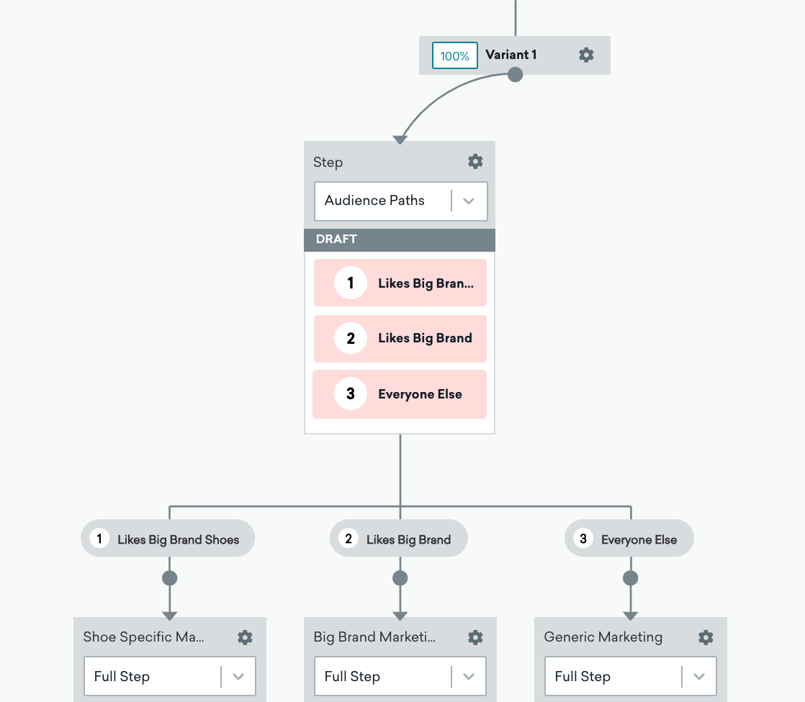

Component Use Cases
Use Case 1
Tailor messages to users based on their country of residency.

Use Case 2
Provide restaurant recommendations based on a user’s past orders, using multiple audience paths to hone in on your user’s favorite cuisine.

Use Case 3
Assign priority to messages targeting more granular user preference data. For example, users who like a big brand’s shoes will receive a message with shoe recommendations, while users who have only expressed interest in the brand more generally will receive recommendations for a mixture of products.
